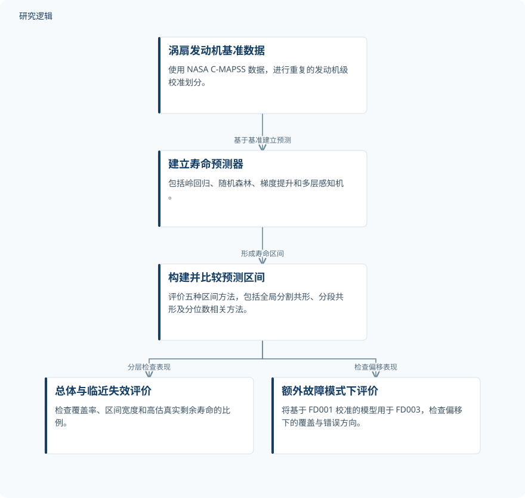

摘要解读
校准不等于安全：涡扇发动机寿命末期与工况偏移下的共形预测区间
Calibrated but not safe: Conformal prediction intervals for turbofan remaining useful life near end of life and under operating shift
解读更新 2026-10-26 12:41 · 依据公开摘要整理，未核验全文细节
发动机剩余寿命预测的区间即使平均覆盖达标，也未必能支持安全维护。这项研究关注两个关键问题：临近失效时区间是否有用，故障模式变化后是否仍然可信。
文章目录
平均覆盖达标，为何仍不足以支持维护
共形预测把剩余使用寿命（RUL）的点预测转化为区间，但平均覆盖保证不能直接回答维护中最紧迫的问题：发动机快失效时，区间是否足够可靠、足够窄？当待评估机群不同于校准数据时，这种保证是否还能成立？本文摘要将这两类风险作为评价重点。
同时检查覆盖率、区间宽度与寿命高估
研究使用 NASA C-MAPSS 涡扇发动机基准 FD001–FD004，包含707台测试发动机，在岭回归、随机森林、梯度提升和多层感知机预测器基础上评价五种区间方法，并进行重复的发动机级校准划分。
评价不仅面向总体，也单独考察真实 RUL 不超过30个循环的临近失效发动机，统计覆盖率、区间宽度及高估真实寿命的比例。此外，研究将基于 FD001 校准的模型用于具有额外故障模式的 FD003，检查分布偏移下的表现。
依据摘要整理的寿命区间评价流程


概括摘要明确描述的预测、区间构建与评价关系，不代表论文原图，也不补充未报告的实验配置。
下载 SVG图示关系说明
实线表示相邻阶段的信息流，虚线表示跨阶段联系或反馈。
涡扇发动机基准数据 → 建立寿命预测器：基于基准建立预测；建立寿命预测器 → 构建并比较预测区间：形成寿命区间；构建并比较预测区间 → 总体与临近失效评价：分层检查表现；构建并比较预测区间 → 额外故障模式下评价：检查偏移表现
宽区间掩盖局部不足，故障模式变化放大风险
全局分割共形预测的平均覆盖率为89–92%，达到名义90%的水平，也覆盖了几乎所有临近失效发动机；但区间约宽44个循环，对只剩30个循环的情形信息有限。同时，真实剩余寿命为61–90个循环的发动机，覆盖率仅为68–76%。
按预测 RUL 分段校准的 Mondrian 共形预测改善了树集成模型的临近失效区间：梯度提升的宽度从43.7降至20.7个循环，树集成模型的临近失效覆盖率保持在96.5–97.8%。但这种收益并不普遍，岭回归的对应覆盖率仅为77%。
未经校准的分位数回归高估了20%临近失效发动机的寿命；共形化分位数回归恢复了平均覆盖，但临近失效覆盖率最低降至80%，该阶段区间平均宽度超过90个循环。更突出的是，从 FD001 转至 FD003 后，临近失效覆盖率降至37–50%；偏移条件下全部未覆盖情形中，95%属于高估剩余寿命这一不安全方向。
摘要能揭示风险，不能界定全部适用边界
摘要给出了测试发动机总数，但未报告各寿命分组的样本量、校准集规模、重复划分次数及完整方法配置，因而无法判断所有比较的稳定性。已描述的偏移验证是 FD001 到 FD003，不能据此推断所有工况变化或真实机队中的表现；摘要也不足以判断是否开展了实际维护决策验证。这些信息未在摘要中交代，不代表论文没有开展。
阅读启发：把总体保证拆成维护相关问题
阅读启发：对于智能运维中的寿命区间，值得进一步阅读的是，作者如何同时处理覆盖率、区间宽度和错误方向，以及分段校准为何在不同预测器上表现不同。本文摘要提示，共形保证是边际性的，并以可交换性为条件；不宜把总体覆盖达标直接解读为临近失效或分布偏移下的安全保证。
以上为本站阅读启发与建议，不是论文已验证的结论。